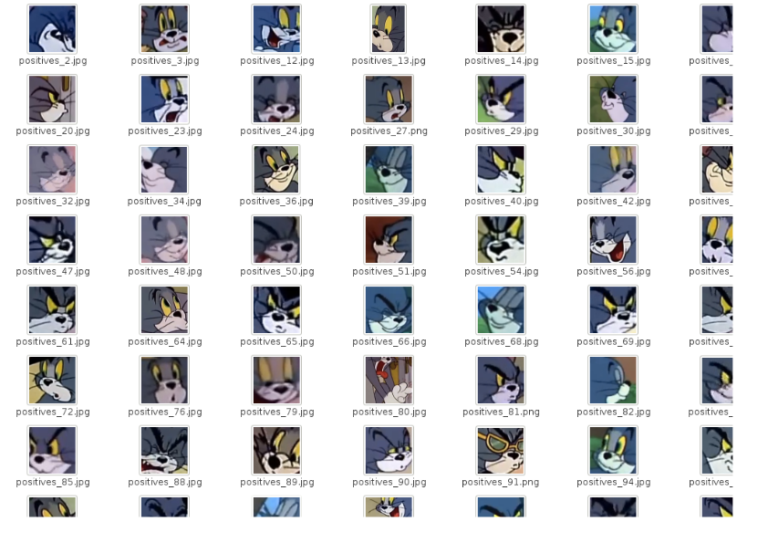
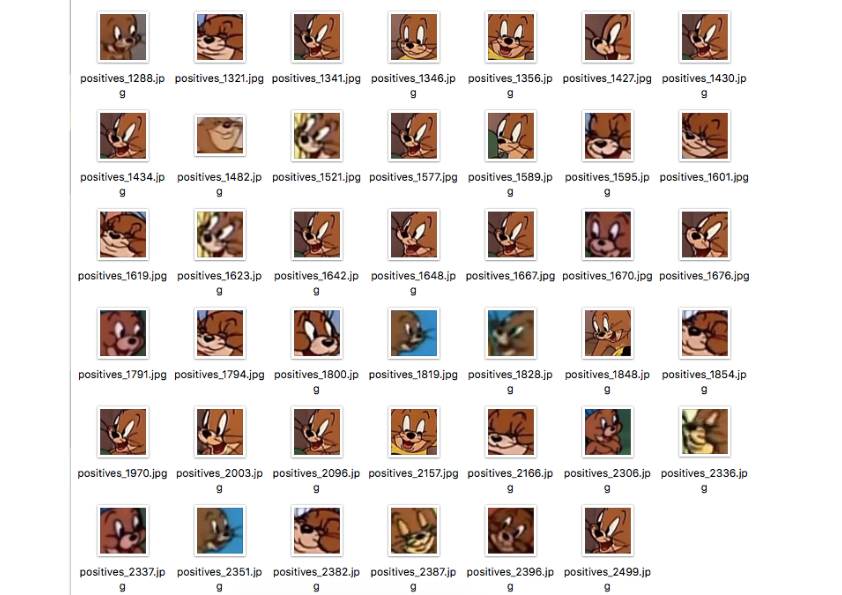
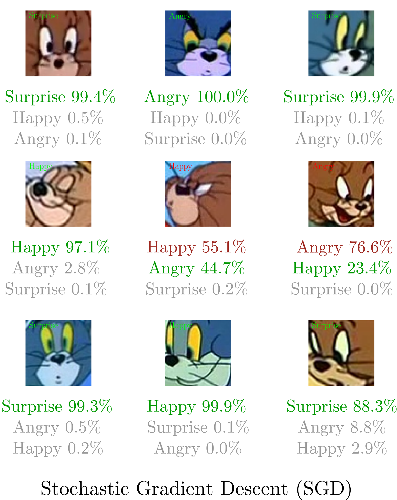
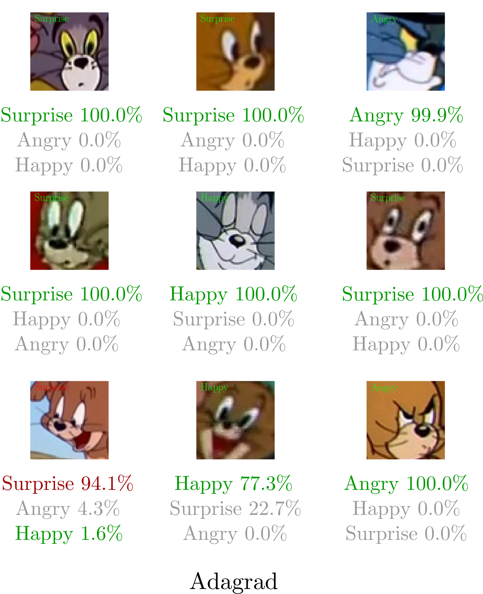
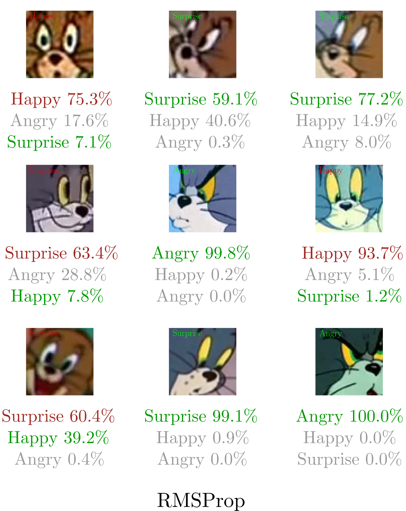

by
John Wesley Hill
PDF HTMLBSc (Hons) Computer Science
University of Lincoln
Lincoln School of Computer Science
Emotion Recognition is a field that computers are getting very good at identifying; whether it’s through images, video or audio. Emotion Recognition has shown promising improvements when combined with classifiers and Deep Neural Networks showing a validation rate as high as 59% and a recognition rate of 56%. The focus of this dissertation will be on facial based emotion recognition. This consists of detecting facial expressions in images and videos. While the majority of research uses human faces in an attempt to recognise basic emotions, there has been little research on whether the same deep learning techniques can be applied to faces in cartoons. The system implemented in this paper, aims to classify at most three emotions (happiness, anger and surprise) of the 6 basic emotions proposed by psychologists Ekman and Friesen, with an accuracy of 80% for the 3 emotions. Showing promise of applications of deep learning and cartoons. This project is an attempt to examine if emotions in cartoons can be detected in the same way that human faces can.
Throughout my time and dedication to finish this dissertation, I would like to thank the following people for their support and advice
AFEW Acted Facial Expression in the Wild
ANN Artificial Neural Network
CNN Convolutional Neural Network
DBN Deep Belief Network
FER-2013 Facial Expression Recognition-2013
FFNN Feed Forward Neural Network
HDF5 Hierarchical Data Format 5
HCI Human Computer Interface
ILSVRC ImageNet Large Scale Visual Recognition Challenge
IRNN Identity Recurrent Neural Network
MCP McCulloch–Pitts Neuron
MGM Metro-Goldwyn-Mayer
MLP Multi–Layered Perceptrons
NLP Natural Language Processing
NTM Neural Turing Machine
NAG Nesterov Accelerated Gradient
OpenCV Open Computer Vision library
PSF Python Software Foundation
LSTM Long Short Term Memory
ReLU Rectified Linear Unit
RNN Recurrent Neural Network
RMS Root Mean Square
SFEW Static Facial Expression in the Wild
SDLC Software Development Life Cycle
SGD Stochastic Gradient Decent
TFD Toronto Face Dataset
UAV Unmanned Aerial Vehicle
XP eXtreme Programming
XML eXtensible Markup Language
\( \epsilon \) A very small number
\( *, \otimes, \circledast \) Convolution
\( \odot \) Element-wise matrix-vector multiplication
\( \nabla \) Gradient
\( \eta \) Learning rate
\( \gamma \) Momentum term
\( J(\theta) \) Objective function
\( \sigma(x) \) Sigmoid function
\( \sigma(\mathbf{z}) \) Softmax function
\( \{0,1\} \) The set containing 0 and 1
\( \mathbb{Z} \) The set of integer numbers
\( \mathbb{R} \) The set of real numbers
\( \theta \) Threshold value/Parameter
In this chapter, we introduce the project by exploring the related topics of emotion recognition and deep learning. The history of both subjects alongside a section explaining the motivation of this project is presented. The subject of animated cartoons is introduced, including an explanation of its history, previous research, relevance and importance to the context of emotion recognition and deep learning. The chapter closes by discussing the aims and objectives of the project plus a summary of the remaining chapters in this report.
The area of Deep Learning traces back to the 1940’s where artificial intelligence research was about to come to fruition. In 1943, neuroscientists Warren McCulloch and Walter Pitts proposed an artificial neuron known as the McCulloch-–Pitts (MCP) neuron. This neuron formed the basis of the first mathematical model of an artificial neuron. Its primary function is to have inputs \(x_i\) that is multiplied by the weights \(w_i\), and the neurons sum the values \(w_ix_i\) to create a weighted sum \( s \). If this weighted sum \( s \) is greater than a certain threshold , \( \theta \) then the neuron fires, otherwise not. (Marsland 2014, 41).
The MCP neuron has some properties worth discussing. The inputs \(x_i\) are binary (1 and 0) and the weights \(w_i\) can be either positive or negative, between (-1 and 1), and the weighted sum formula is expressed mathematically as:
The MCP neuron’s threshold \( \theta \) is one example of an “activation function", this is responsible for “firing" or activating a neuron. In the case for the MCP neuron, the activation function is a linear step function (or more similarly a Heaviside function) (Wang, Raj, and Xing 2017, 9) the threshold activation function is mathematically expressed as:
| \[\label{eq:2} {\displaystyle y = f(s)=\left\{{\begin{array}{rcl}1&{\mbox{for}}&s\geq\theta\\0&{\mbox{for}}&s< \theta\end{array}}\right.}\] | \[(1.2)\] |
When applied, the output \( y \) is binary (1 or 0) depending on the threshold criteria \( \theta \), the MCP neuron only produces a binary result in response. The MCP neuron can perform any logical function using (AND, OR, NOT) by setting predetermined thresholds and inputs. Figure 1.1 shows an example MCP neuron.
Although very basic, the MCP neuron was superseded by another model known as the \( \textbf{Perceptron} \).
The perceptron is a linear classifier coined by Frank Rosenblatt in 1958 that is capable of classifying given inputs into two classes respectively. To put forward an example, as spam filter separating emails into “Spam" and “Not Spam" is a clear use case that a perceptron can solve.
On the surface, Rosenblatt’s perceptron shares some similarity with the MCP neuron. (Marsland 2014, 43) puts it as “nothing more than a collection of McCulloch and Pitts neurons together with a set of inputs and some weights to fasten the inputs to the neurons." However, there are still some differences between the two.
Firstly, the perceptron includes an independent constant weight called the bias, which is set to 1 or -1. The bias acts as an offset which shifts the input space away from the origin. Figure 1.2 shows an example of a perceptron with a bias of 1.
The MCP neuron only has binary outputs (1 or 0) and the perceptron outputs negative or positive values (+1 or -1). Interestingly, the most significant feature of the perceptron is its ability to learn, the MCP neuron cannot do this as (Wang, Raj, and Xing 2017, 9) states that “The weights of [the MCP neuron] \( w_i \) are fixed, in contrast to the adjustable weights in [the] modern perceptron". From a biological standpoint, (Rojas 1996) argues the ineffectiveness of the MCP neuron stating that they are “too similar to conventional logic gates".
Perceptrons apply “Hebbian Learning" to learn from data. Named after the psychologist Donald Hebb (under “Hebb’s Rule"), Hebb conjured that the link (weights) between two or more neurons strengthens or weakens given its firing activity. More specifically, “...When an axon of cell A is near enough to excite a cell B and repeatedly or persistently takes part in firing it, some growth process or metabolic change takes place in one or both of the cells such that A’s efficiency, as one of the cells firing B is increased" (Hebb 1949, 62). In short, both (Lowel and Singer 1992, 211) and (Schatz 1992, 21) condense this rule succinctly: “cells that fire together, wire together". Mathematically, The perceptron model is an adjusted formula from Equation 1.1:
Alongside the Hebbian Learning Rule for updating the weights of the perceptron:
Where \( w_{ij} \) represents the weight change, and \( \eta \) represents the learning rate, as it is multiplied by the input weights \(x_i\) and the output \(y_j\). With this rule in place, the perceptron adjusts its weights based on the output of the network.
Rosenblatt proposed a convergence theorem which proves that the perceptron will converge towards a solution such that the data will be separated by a finite number of iterations, given that the data is linearly separable. This notion was challenged by (Minsky and Papert 1969) where they discussed the limitation of the perceptrons ability to solve the XOR (Exclusive OR) function and concluded that the XOR function was not linearly separable. (Ertel 2011, 170) explains this issue further, “...the XOR function does not have a straight line of separation. [Clearly,] the XOR function has a more complex structure than the AND function in this regard." Figure 1.3 graphically shows why the perceptron cannot solve the XOR problem.
Since then, the XOR problem in perceptrons caused a major setback for neural network research, nicknamed the “AI Winter". Only until the introduction of Multi-Layer Perceptrons (MLP) shown in Figure 1.4 and backpropagation that this issue was eventually solved.
Multi-Layer Perceptrons are different to single layer perceptrons as described above; the difference becomes clear with the introduction of the “Hidden Layer". “These internal layers are called “hidden“ because they only receive internal inputs and produce internal outputs.” (Patterson 1998, 142) We call this type of network Feed Forward Neural Networks (FFNN) because each perceptron is interconnected and feeds information forward to the next layer of perceptrons, and that “There is no connection among perceptrons in the same layer." (E. Roberts 2006).
The MLP makes use of the backpropagation algorithm, although the algorithm is not exclusive to MLP’s. The algorithm adjusts the weights of the network based on the “errors" of the output layer. “In this way, errors are propagated backwards layer by layer with corrections being made to the corresponding weights in an iterative manner" (Patterson 1998). This process is called gradient descent which is key in backpropagation. Ertel (2011) mentions that the weight update method is derived from the “delta rule" (an alternative to Hebbian Learning) and uses a sigmoid function (see Equation 1.5) as the activation function (2011, 246). The sigmoid function \( \sigma(x) \) outputs a value within the range (0, 1) whereas the linear step function outputs a value in the exact range {0, 1}.
The result of these constant weight readjustments is that the total error is reduced to a minimum. Schmidhuber (2014) suggests that Paul Werbos was the first to apply an efficient backpropagation algorithm to neural networks in 1981 (2014, 11) (Bishop 1995, 141) mentions that backpropagation came to prominence in a paper by (Rumelhart, Hinton, and Williams 1986, 2) as an answer to the XOR problem, contending that “...a two-layer system would be able to solve the problem.". To further their case, they argue that placing a single hidden unit changes the similarity structure of the network to allow the XOR function to be learned (Rumelhart, Hinton, and Williams 1986, 3) and conclude with the statement that the “...error propagation scheme leads to solutions in virtually every case."(Rumelhart, Hinton, and Williams 1986, 33). Backpropagation became a common technique in training neural networks and is still being used today.
During the 1980’s and 1990’s adding multiple layers to neural networks were showing promising results and led to breakthroughs in deep learning. The Neocognitron was one of those promising models proposed by Kunihiko Fukushima in 1980. The Neocognitron has two types of cells originally coined by (Hubel and Wiesel 1962, 109), “S-cells" (Simple cells) are used for feature extraction and “C-cells (Complex cells) are used to recognise distinct features of a pattern regardless of distortion. (Fukushima 1980, 193) confirms this: “The response of the C-cells of the last layer is not affected by the pattern’s position at all." In short, the deepest layers in the Neocognitron are less sensitive to shift invariance.
The Convolutional Neural Network (CNN) was introduced by Y. LeCun et al. (1990) where it was applied on handwritten digits with a 1% error rate. (1990, 11). The network is known as “LeNet”, one of the first CNN’s. This successful result was due to handling “...a variety of different problems of digits including variances in position and scale, rotation and squeezing of digits, and even different stroke width of the digit." (Wang, Raj, and Xing 2017, 39). These are attributes similar to the Neocognitron. The LeNet advanced further with the introduction of the “LeNet-5" by LeCun et al. (1998), being put to use on recognising handwritten digits with a 0.95% error rate (without distortions) and an error rate of 0.8% (with distortions) (1998, 2288). Figure 1.5 shows an example Convolutional Neural Network.
A year before the CNN, another neural network, the Long Short-Term Memory (LSTM) Neural Network was invented to solve a specific problem. LSTM’s is an evolved version of the Recurrent Neural Network; a network which has cycles, giving it the ability to handle sequential data one element at a time. (Lipton, Berkowitz, and Elkan 2015, 2). Lipton, Berkowitz, and Elkan (2015) puts forward that RNN’s are trained using Backpropagation Through Time (BPTT) and states that all RNN’s apply it (2015, 11). However, training RNN’s was a challenge because of the “vanishing/exploding gradient problem".
This phenomenon occurs when the RNN backpropagates errors across many time steps. As a result, “[the] error signal decreases exponentially within the time steps the BPTT can trace back" (Wang, Raj, and Xing 2017, 53) Indicating that learning becomes more difficult as the gradients get tiny over time. The reverse, exploding gradients “can make learning unstable" (Goodfellow, Bengio, and Courville 2016, 282), Figure 1.6 shows an example RNN with an example of the vanishing gradient problem.
LSTM’s are designed to address this problem; by introducing a “memory cell" and gated units, enabling the network to remember information when it needs to selectively. The benefit is that previous sequences are remembered for an extended period without degradation, as opposed to the RNN. Figure 1.7 describes such an LSTM. Hochreiter and Schmidhuber (1997) have shown that the LSTM can solve problems after 10 and 1000 time lags, in addition to outperforming other algorithms (1997, 10–11). Meaning that LSTM’s are a good choice for learning time-dependent sequential data. Notable applications range from language translation, video captioning and speech recognition.
A breakthrough in 2006 led to the introduction of the Deep Belief Network (DBN) introduced by Geoffrey Hinton. DBN’s are generative networks that pioneered a fast learning technique called “Layerwise pre-training" that trains the network unsupervised from a bottom-up approach. “[Intuitively], pre-training is a clever way of initialization" (Wang, Raj, and Xing 2017, 30). DBN’s can attain good generalisation results. For example, it achieved an error rate of 1.2% on am MNIST handwritten digit recognition task (Hinton and Salakhutdinov 2006) in which pre-training was an advantage: “Pretraining helps generalization because it ensures that most of the information in the weights comes from [modelling] the images" (Hinton and Salakhutdinov 2006, 507).
Since 2006, interest in deep architectures from the research community rose as computers got faster over time, with neural networks taking advantage of parallel processing, faster GPU’s, and huge amounts of data to break classification records. A deep CNN called “AlexNet" built by Krizhevsky, Sutskever, and Hinton (2012) won the 2012 “ImageNet" challenge with an error rate of 15.3%, surpassing the second best entry error rate, 26.2% and was trained on 2 GPU’s for six days (2012, 1). Interestingly, a novel optimisation technique AlexNet uses is called “Dropout“. It speeds up the training process and prevents overfitting by removing neurons from the network. ”Dropout roughly doubles the number of iterations required to converge." (Krizhevsky, Sutskever, and Hinton 2012, 6). AlexNet’s success encouraged more deep CNN architectures to be created, such as VGGNet (OxfordNet), GoogLeNet, ResNet, etc.
By glancing at the history of deep learning, it is apparent that there is promise in its potential to solve numerous problems. With inspiration from biology and in combination with the computational power of GPUs, neural networks today are being actively researched, One to consider are Neural Turing Machines (NTM) capable of learning basic algorithms such as copying and sorting. What’s more, Graves, Wayne, and Danihelka (2014) considers how the NTM resembles a human working memory system by comparing human based rules to simple programs, proposing that the NTM can learn to use it’s own memory. (2014, 2). Despite this technology and more advancements like it being a few years or decades away, the popularity of deep learning remains strong in academia and industry.
It is no surprise that emotion recognition originated from the study of “emotions". Cowie et al. (2001) believes that it is examined in three major disciplines: psychology, biology and philosophy (2001, 35) and in the past had different definitions. Descartes focuses on passions and the soul, he refers to what we call emotions as “the passions" and provides a definition: “...we may define them generally as those perceptions, sensations or emotions of the soul which we refer particularly to it, and which are caused, maintained and strengthened by some movement of the spirits." (Descartes 1985). Descartes proceeded to define the six primary passions: “wonder, love, hatred, desire, joy and sadness" omitting the other remaining passions which he contests are related to the primary (1985, 1:353). Darwin instead focuses on facial expressions in emotions and argues from a biological perspective. He introduced the idea of “serviceable habits" suggesting that emotions are adaptive. Evidence of this is shown by Hess and Thibault (2009) as they argue that these serviceable habits lost their functionality as humans got more civilised, showing a sign of evolution. (2009, 353).
The proper classification of distinct emotions was developed by psychologists Ekman and Friesen, where they hypothesised that emotions are universal across all cultures in humans via a stimulus test. The significance of this work indicated that any human could recognise and categorise one of or all of the six basic emotions. “(happiness, sadness, anger, fear, surprise and disgust)" (Ekman and Friesen 1971, 124). This insight also confirms Darwin’s hypothesis of emotion being universal and extends this to animals, as he summarises: “We can thus also understand the fact that the young and the old of widely different races, both with man and animals, express the same state of mind by the same movements." (Darwin 1872, 352).
The definition of Ekman’s six basic emotions has been the standard benchmark for emotion recognition for computing devices and robots, developing a new field called “Affective Computing" defined as “...computing that relates to, arises from, or deliberately influences emotions." (Picard 2000). In the context of facial expression, Picard subscribes to Ekman’s model researching facial expressions and computers attempting to recognise them, “Presently, most attempts to automate recognition of facial expression are based on Ekman’s system." (Picard 2000)
Applications in emotional recognition include a diverse array of areas; such as video games to understand the emotional state of a player playing a game. To online entertainment and marketing, to classify an emotion from a user when watching videos or advertisements to name a few. Emotion Recognition is researched extensively in Human-Computer Interaction (HCI) where it can be used to in health care to assess emotional status in patients (Lisetti et al. 2003) and as an aid in autism, to help children understand emotions around them. Notably, the rise of social media is also playing a role in emotion recognition, one of the most popular applications for it. In their analysis, K. Roberts et al. (2012) found that from a sample dataset of tweets, most shared either, disgust (16.4%) and joy (12.4%) or no emotion at all (57%) (2003, 3808). By using Ekman’s system as a specification for universal emotion and the introduction of affective computing, there is promise in the future that emotion recognition will show even more promising results in the future.
Cartoons are simplified illustrations drawn to entertain children (comic books and children’s books) to adults (political cartoons and caricatures). Cartoons are considered an extension of an illustrated book and have been recognised as an art form and even a career with the title “Cartoonist". Despite the fact that cartoons started out in print, attempts to transform them rapidly took place in the early 20th century as “Animated Cartoons".
Much of the evolution of cartoons becoming animated is credited to many people, combined with their techniques and illusion to mimic the effect of a moving object. Émile Cohl who created the very first hand drawn animation in 1908 called ‘Fantasmagorie’. The technique used to create the first full animated cartoon was borrowed from George Méliès a French illusionist and filmmaker who invented the technique of “stop motion". James Stuart Blackton an illustrator who combined Méliès’s stop motion and Winsor McCay the creator of ‘Gertie the Dinosaur’ were among one of the first animators in the field.
Regarding technical achievements, J. Yu and Tao (2013) mentions that Earl Hurd and John Bray created the way of efficiently coordinating the pre-production of an animation listing; composed transparent cels and a peg system for making working with backgrounds easier as examples, that are still in use today in animation (2013, 4:107).
From the 1920’s onwards Walt Disney was the most influential pioneers in animation history, alongside his most notable creation and famous mascot “Mickey Mouse". Disney considered the movies made by him to be experiments, one of them “the usage of sound and colour in animation" (J. Yu and Tao 2013) was in ‘Steamboat Willie’ in 1928.
Animation historians marked the 1930s as the ‘Golden age of animation’ where animated cartoon came in unison with Hollywood, popular culture and the mainstream through television. Major contributors in this period included “Fleischer, Iwerks, Van Beuren, Universal Pictures, Paramount, [Disney], MGM and Warner Brothers" (J. Yu and Tao 2013). Onwards into the 1980s, the invention of personal computers moved animated cartoons from paper to pixels. As computers got better with computer graphics, Pixar introduced the first fully computer animated film Toy Story.
Since then, 3D animation became more popular and faster to create for feature length films from the big studios, “and desktop computer animation is now possible at a reasonable cost" (J. Yu and Tao 2013), with 2D animation getting popular on the internet in the 2000s.
It seems that the current progress in both deep learning and emotion recognition suggests that computers are tremendously getting more accurate at correctly classifying emotions in the mediums of videos, speech or images. The state of the art of emotion recognition is tested in the EmotiW (Emotion Recognition in the Wild) Challenge.
The purpose of this project is to measure how accurate a computer can correctly identify an emotion from a given set of images from a cartoon video. This project is an attempt to replicate their success and to find out if these deep learning techniques can be applied to learn specific information in cartoons, the area of interest is emotions. This decision is based on the fact that cartoons are known to express a lot of emotion, especially in the characters, and the choice being ‘animated cartoons’ is one where we can extract emotions from these characters in one or more videos.
The ability for a computer to identify emotions in a cartoon would open more information to be extracted and analysed. Plus, it would explore what is possible with artificial intelligence, emotion recognition and especially animation. (Wang, Raj, and Xing 2017) admits that “Unfortunately, the computer animation community has not utilised machine learning as widely as computer vision" (Wang, Raj, and Xing 2017, 3). Although there has been some research in animation and machine learning, the current state of the art differs greatly and will be discussed in the background section.
The fulfilment of the above aim of this project: ‘to measure how accurate a computer can correctly identify an emotion from a given set of videos’ requires the following set of objectives below to be met:
Discuss relevancy of Deep Neural Networks with relation to Emotion Recognition.
This just a detailed account of the strengths and weaknesses of the appropriate Deep Neural Networks for this report.
Acquire, Clean, Label and Prepare the dataset.
The dataset will be most likely be generated from manually. e.g. YouTube, otherwise using a pre-trained dataset would suffice due to for time constraints if found.
If generating the dataset from a YouTube video, a cartoon must be selected for this purpose, with a justification.
A short account of the facial expressions selected for recognition will be presented.
A brief discussion of the image processing or computer vision techniques or algorithms will be presented.
Design or Select an appropriate Deep Learning model, and create an implementation for training cartoon emotional analysis.
Depending on time constraints, a minimum of 3 emotions for emotion recognition for eg. (happy, anger, and suprise). will be considered.
A short account of the selected software framework and how the model was trained will be discussed.
Evaluate the accuracy of the model and finalise the project.
An analysis of the computer to identify emotions will be measured thoroughly in the evaluation.
The report ends with a reflection and is finalised.
discusses the background of the report going into a literature review of related work to this project. Some details of the deep learning architectures of the CNN, RNN and even some combinations of the two will be examined. A background and literature review of emotion recognition will be also discussed in this section as well. provides a short account of the recommended software development methodology chosen for this project plus the research methods. goes through the Software Development Life Cycle (SDLC) phases of the project including the tools used to produce the artefact. is the penultimate phase that takes into account the optimisation algorithms used to discover the best algorithm for the dataset. The results are included in this section as well. is a critical reflection of the overall project with a discussion using a risk matrix from the project proposal.
This project intends to link together three fields: animated cartoons, deep learning and emotion recognition. While the latter two fields have been researched in depth, little research of these two latter fields (emotion recognition and deep learning) in the context of animated cartoons have been explored. This chapter sets out to discover the case for why that is and to justify further the purpose of this project.
For work in the area of emotion recognition, similar research into emotion detection & sentiment analysis in images was conducted by (Gajarla and Gupta n.d). Their dataset was collected from the internet, specifically from online photo sites such as Flickr, Tumblr and Twitter. For the categories to detect emotions they have chosen 5 emotions: “Love, Happiness, Violence, Fear and Sadness." (Gajarla and Gupta n.d, 2). Some pre-trained CNN models were tested. VGG-ImageNet, VGG-Places205 and a ResNet-50 model were fine tuned to detect emotions in the dataset. They found that the ResNet-50 model produced a result of 73% accuracy showing promise of only a fine tuned model. Interestingly, for the emotions ‘Sadness’ and ‘Happiness’ the model is able to learn faces from the dataset. However, “We also observe that 80% of the images that are tagged as happiness are face images. Hence this category is biased towards faces." (Gajarla and Gupta n.d, 3). Alternatively, the dataset for this project will consist of only faces showing facial expressions to keep the dataset fair.
With any dataset, it may be worthwhile to see how other well established datasets perform in relation to other similar datasets in emotion recognition, in addition to learn how the dataset was constructed. (Zafeiriou et al. 2016) focused on surveying databases that have faces collected “in the wild". That is, datasets that contain faces not produced in a strictly controlled setting, rather just publicly available faces hand annotated to a specific emotion. The datasets of interest to this project are datasets that contain facial expressions, Zafeiriou et al. (2016) attributes the most prominent datasets Facial Expression Recognition 2013 (FER-2013) which was collected using Google Images and was constructed as greyscale 48 \( \times \) 48 faces containing the universal expressions, in addition with the neutral emotion with a total of 35,887 images. Both the Acted Facial Expression In The Wild (AFEW) and Static Facial Expression In The Wild (SFEW) datasets were used in the Emotion Recognition “in-the-wild" challenges (2016, 1490), in relation to this, Kahou et al. (2015) used the FER-2013 dataset alongside additional datasets, such as the Toronto Face Dataset (TFD) and AFEW (2015, 468).
However, (Zafeiriou et al. 2016) mentions that the AFEW and SFEW datasets only contain posed facial expressions from motion pictures that are annotated to only the universal expressions proposed by (Ekman and Friesen 1971), stating that “...[its] a taxonomy rarely that is considered too limited for modelling real-world emotional state". This observation was a challenge faced by both (Gajarla and Gupta n.d) “The problem of labelling images with the emotion they depict is very subjective and can differ from person to person." (Gajarla and Gupta n.d, 4) and also (Kahou et al. 2015) “We found that a fairly large number of training videos could be argued to show a mixture of two or more basic emotions" (Kahou et al. 2015, 47). Extra care is needed for animated cartoons since cartoons can display various emotions that can be ambiguous or even comprise of two different emotions. As a result the ‘neutral’ emotion will not be classified in this project.
Applications in emotion recognition as Cowie et al. (2001) points out, include avoidance, alerting, production, tutoring and entertainment. This project would most likely fall in-between the applications of tutoring and entertainment. The former, because it could allow a computer to recognise an emotion in an animated cartoon automatically. It could generate subtitles (text or audio) explaining and teaching the emotions of the characters throughout the video to children. The latter for the fact that cartoons is a form of entertainment; to adults and especially children. For example, a recommendation system could be envisioned where an animated cartoon has a emotion rating outlining which characters possess various emotions in an episode.
There will be issues with these applications, mainly with the systems that need to detect emotions, whether through speech or faces. Cowie et al. (2001) argues that deception is a hard challenge in detecting for computers (2001). Since humans are capable of this, cartoons can also have characters that show forms of deception, which can confuse a system trying to recognise an emotion. Hence, “...that means accepting that the system will be deceived as humans are" (Cowie et al. 2001).
There exists some research in the area of machine learning and animated cartoons, however this research does not include any deep learning methods. Nevertheless, Wang, Raj, and Xing (2017) mentions that manifold learning is a popular machine learning technique for animated cartoons and maintains a close relationship with animation research (2017, 3). Manifold learning is a unsupervised learning method that transforms high dimensional data into a low dimension. The idea of this transformation is attractive in machine learning because “It aims to reveal the intrinsic structure of the distribution measurements in the original high dimensional space" (Wang, Raj, and Xing 2017). de Juan and Bodenheimer (2004) applied this by reusing existing cartoon data and re-sequencing the cartoon frames into a new animation, the low dimension manifold serves as a similarity graph of each frame of a cartoon (2004). Both multi-layer neural networks and manifold learning can represent data in a non-linear fashion and according to Rajanna et al. (2016) can be combined together to boost classification accuracy (2016). While manifold learning is out of the scope of this report, deep architectures such as Deep Belief Networks (stacked Restricted Boltzmann Machines (RBMs)) and Autoencoders could be explored further for animation.
Both animals and humans are extremely good at visual tasks, in fact Russakovsky et al. (2014) concluded from an evaluation of the ILSVRC’s 5 year history that humans achieved a classification error of 5.1% from an assortment of 1500 images (2014, 31). In the past, computers were unable to perform these visual tasks until the introduction of the CNN.
The CNN is a special type of neural network, it was first researched in the area of neuroscience with the inspiration of the animal visual cortex by (Hubel and Wiesel 1962). (Goodfellow, Bengio, and Courville 2016, 247) describes one of the many factors that made the CNN successful in computer vision tasks. Given a single image of a cat for example, skewing or distorting this image does not change the fact that the image contains a cat (2016, 247). Humans understand this intuitive principle well, and so do CNN’s, this property that CNN’s have is called shift invariance, the idea that an algorithm can distinguish features in an image; regardless if the image is shifted in large or small orders of magnitude. “CNNs take this property into account by sharing parameters across multiple image locations." (Goodfellow, Bengio, and Courville 2016, 247), and in return this returns a great benefit for the network in that it “...has enabled CNN’s to dramatically lower the number of unique model parameters" (Goodfellow, Bengio, and Courville 2016, 247). In comparison to a fully connected network, (typical FFNN) overfitting is less likely in a CNN, because only local neurons are connected to each other and in turn the number of parameters are reduced. Figure 2.1 shows an illustration of parameter sharing, only local neurons that are close together share weights such as \( f_1 \) & \( f_2 \). Goodfellow, Bengio, and Courville (2016) recognises this added benefit, such that the network only has to learn one set of parameters rather than a separate set of parameters for each weight and is in turn computationally efficient (2016, 328).
As the name suggests, the word ‘Convolution’ is indeed derived from a mathematical operation, requiring two functions \( f \) & \( g \) and producing another function \( h \) which is an integration of the amount of overlap of \( f \) as it is shifted over \( g \) (Wang, Raj, and Xing 2017, 36). Equation 2.1 describes this operation for a single dimension. Traditionally, convolving the functions \( f \) & \( g \) is denoted as \( (f * g) \) although other notations \( (f \otimes g) \) or \( (f \circledast g) \) are sometimes used as well, mostly in signal processing. The formal notation will be used instead of the latter notations.
| \[\label{eq:6} h(t) = (f * g)(t) = \int_{-\infty}^{\infty}f(\tau)g(t-\tau)\ \mathrm{d}\tau\] | \[(2.1)\] |
This operation has the property of commutativity, that is: \( (f * g) = (g * f) \). Along with the definition of convolution in Equation 2.1, To prove this, a change in the integration variable \( \tau \) to become \( \tau \rightarrow t - \tau \), thus this is equivalent to:
| \[\label{eq:7} h(t) = (f * g)(t) = \int_{-\infty}^{\infty}g(t-\tau)f(\tau)\ \mathrm{d}\tau\] | \[(2.2)\] |
This proves that \( (f * g) = (g * f) \) only for the functions \(f, g \in \mathbb{R}^n \) (Strichartz 2003, 32), this property is just a reverse operation of a signal but the reason for this will become clear later on.
In the context of CNN’s, one of the ways the convolution operation is best understood is in the domain of digital images. Thus, we will consider focusing on convolving over discrete functions rather than continuous functions such as analog signals in Equation 2.1. The type of convolution needed for this kind of data is called a discrete convolution as shown in Equation 2.3, the only difference to this equation is that the integral is now switched for the summation operator for digitised data, and that we use integers (\( \mathbb{Z} \)) instead of real numbers (\( \mathbb{R} \)).
However, this is still a one dimensional convolution; to work with digital images it is ideal to perform a 2D convolution. Such a convolution comprises of three parts, both of which apply to both images and CNNs: “...the first argument (in this example [2.3], the function [f]) to the convolution is often referred to as the input and the second argument (in this example, the function [g]) as the kernel. The output is sometimes referred to as the feature map." (Goodfellow, Bengio, and Courville 2016, 322–23). In addition to the equation in Equation 2.3, we would need to introduce a double summation to accommodate the matrix rows & columns to convolve the kernel on. The result is Equation 2.4 in which the commutative property also holds true if \( I(m,n) \rightarrow I(i-m, j-n) \) and \( K(i-m, j-n) \rightarrow K(m,n) \).
“...the only reason to flip the kernel is to obtain the commutative property" (Goodfellow, Bengio, and Courville 2016, 323). One should take caution that the similar operation called cross correlation is the same as convolution without flipping the kernel (Goodfellow, Bengio, and Courville 2016, 324). The explanation of cross correlation is out of the scope of this article but Equation 2.5 demonstrates how similar it is to convolution. Another difference is that cross-correlation does not have a commutative property whereas convolution does.
The important difference between the two is that convolution describes the modification of a signal whereas cross-correlation describes the similarity of a signal. Convolving the kernel \( K \) over image \( I \) happens by sliding the kernel \( K \) over the input image for each row and column in the input image. The output of this operation from the kernel convolution is called a feature map. The three examples of this process are shown in Figure 2.2 where the example kernel is a laplacian kernel mostly used in image processing to highlight edges in images.
Different kernels for 2D images can be used depending on what feature the CNN has to recognise, but what is certain is that the next stage after creating our feature map is to remove irrelevant features in the image. The CNN has a dedicated layer for this, called the pooling/subsampling layer. The idea behind this layer is to reduce the dimensions of the image and only keep the important features for further processing.
Max pooling is a common example used by CNN’s in dimensionality reduction. It simply returns the maximum pixel of an image from a region of \( M \times N \) pixels. Max pooling is not the only technique in reducing features, “Other popular pooling functions include the average of a rectangular neighbourhood, the \(L^2\) norm of rectangular neighbourhood, or a weighted average based on the distance from the central pixel." (Goodfellow, Bengio, and Courville 2016, 330). Figure 2.3 shows an example of max pooling taking place on two images. This particular reduction layer is responsible for the CNN being invariant to small translations, Goodfellow, Bengio, and Courville (2016) highlights this point, suggesting that in all cases pooling helps to transform the representation of an image to become invariant to small translations of the input. (2016, 330). This powerful but simple technique means that no matter the image input, pooling deconstructs the image into a smaller representation that allows the network to only focus on the most important features even with a small shift of the input image. “Invariance to local translation can be a useful property if we care more about whether some feature is present than exactly where it is." (Goodfellow, Bengio, and Courville 2016, 331). Goodfellow, Bengio, and Courville (2016) goes further to provide examples of the features that CNN’s look for regardless of location, such as whether an image contains a face or eyes, or corners of some edges we only need to know if a face or an edge exists and not to worry about the location of such features. (2016, 331).
If we take the example in Figure 2.3, the letter ‘A’ after it is convolved and pooled, shows a large highlighted region of white pixels. The CNN would most likely look for those edges to determine if it really is the letter ‘A’. These edges are the features that the CNN would look for that are similar to Figure 2.1 most likely feature \(f_1\). After many layers of pooling and convolutions, the representation of the image would be reduced to the point that the image would not be recognisable prima facie. For this reason fully connected layers connect the reduced image pixels from the previous layer to a layer where neurons are interconnected to each other rather than sparse connections like CNN layers. We can get a better understanding of what sort of features the network will learn from the individual pixels in the fully connected layer.
\[\sigma(\mathbf{z})_j = \frac{e^{z_j}}{\sum_{k=1}^K e^{z_k}} \ \ \ \ \ \forall j \in 1...N \ \ \ \ \ \ \ \ \ \ \ \ \ \ \ \ \ x = max(0, x) \]
The last layer of the network is called the output layer (also called the classification layer) lists all the predictions of what the input could be. Since the input could be either ‘A’, ‘B’ or ‘C’ we would need at least 26 output neurons to classify a single character from the alphabet (assuming only uppercase letters). Figure 2.4 shows an example of two fully connected layers and an activation function called a rectified linear unit or (ReLU). ReLU differs from the sigmoid function (see Equation 1.5) in that it is not upper bounded between 0 or 1. But they are both similar in that their activation response is always non-negative, because both of these functions are always lower bounded at 0.
There is an advantage for being strictly lower bounded to 0 in the case for the ReLU activation function, Glorot, Bordes, and Bengio (2011) argues that ReLU introduces a sparsity property, meaning that neurons with negative activations turn into ‘real zeros’ that simply will not activate and pass through the network and can make data more linearly separable (2011, 317). ReLU is truly closer to the activations inside a biological neruon as opposed to the sigmoid function, “...rectifier units naturally lead to sparse networks and are closer to biological neurons‘ responses in their main operating regime." (Glorot, Bordes, and Bengio 2011, 316). This has lead to the result that : “...training proceeds better when the artificial neurons are either off or operating mostly in a linear regime." (Glorot, Bordes, and Bengio 2011, 316). Equation 2.6 on the right shows the ReLU formula taking only the maximum value from 0 to \( x \).
But with all activation functions, (Glorot, Bordes, and Bengio 2011) issues a caution of ReLU: “...forcing too much sparsity may hurt predictive performance for an equal number of neurons, because it reduces the effective capacity of the model" (Glorot, Bordes, and Bengio 2011, 316). But despite this, ReLU is one of the most popular activation functions in use in deep neural networks. “Deep convolutional neural net- works with ReLUs train several times faster than their equivalents with tanh units." (Krizhevsky, Sutskever, and Hinton 2012)
For classification in the output layer, the softmax function is mostly used. Although softmax is visually similar to the sigmoid, they are dissimilar in function. The softmax function translates an input vector \( v \) into an array of probabilities for each vector. A good case for using this type of activation function is for multi-class classification rather than binary classification like sigmoid. For example in the case for Figure 2.5, a vector of prediction probabilities for each character in the alphabet is returned when passed through the softmax function, the probabilities determines the most likely class label to be predicted. Equation 2.6 on the left shows the softmax equation.
This process repeats (from convolution to softmax) for a number of times until the maximum steps (or epochs) is reached. The first pass of the training process is known as a forward propagation, for brevity of this report, the backpropagation algorithm is not explained, rather the gradient descent optimisation algorithms that accompany it are in the testing & evaluation section.
It should also be worth noting that CNN’s are not only used in image based problems, Hu et al. (2015) applied CNN’s to Natural Language Processing (NLP) by proposing a convolutional sentence matching model where the meaning of a sentence is summarised by performing convolution and pooling (2015). CNN’s have become more complex than the ones shown in Figure 1.5 and Figure 2.5, containing multiple subsampling and convolutional layers depending on the size of the dataset and problem.
The annual ImageNet challenge, (formally the ILSVRC challenge) was designed to assess the state of the art of computer vision by achieving a high degree of accuracy in image classification and object recognition. The dataset consists of over 14 million images (as hyperlinks) in more than 21,000 categories. The goal of the challenge is to classify 1000 images in 1000 categories from using a small portion of images from the ImageNet dataset.
ImageNet Classification with Deep Convolutional Neural Networks (or known as the ‘AlexNet’ paper) authored by (Krizhevsky, Sutskever, and Hinton 2012) was a turning point in the ImageNet challenge that produced a winning error rate of 15.3%, beating the previous record which was 26.2%. Modern deep convolutional neural network architectures today improve and surpass AlexNet, such as VGGNet (OxfordNet), GoogLeNet, ResNet and the latest one to date, CUImage holds the record of 2.66%. The choice of this paper was down to the fact that this was where the CNN was first used (and continues to be used) in this challenge and serves as the benchmark for image classification.
AlexNet’s CNN architecture and others that are similar to it are worth exploring consisting of “...eight layers with weights; the first five are convolutional and the remaining three are fully-connected." (Krizhevsky, Sutskever, and Hinton 2012). Krizhevsky, Sutskever, and Hinton (2012) outlines the main architecture, the layer convolves the 224 \( \times \) 224 \( \times \) 3 input image with 96 kernels with size 11 \( \times \) 11 \( \times \) 3 and the image is pooled. The layer convolves the first layer with 256 kernels with size 5 \( \times \) 5 \( \times \) 48 that are then subsequently pooled. The , , contain the same width and height (3 \( \times \) 3) but with various depths, 256, 192, 192. The fully connected layers have 4096 neurons each with the output layer containing 1000 nerons. (2012). Figure 2.6 shows a simplified version of AlexNet. The network was split across two GPUs because one GPU was not enough to accommodate training 1.2 million training examples, It did have an advantage though: “The two-GPU net takes slightly less time to train than the one-GPU net." (Krizhevsky, Sutskever, and Hinton 2012).
| Class | Score |
|---|---|
| zebra | 0.91752 |
| hartebeest | 0.00153 |
| impala, Aepyceros melampus | 0.00104 |
| ostrich, Struthio camelus | 0.00099 |
| prairie chicken, prairie grouse, prairie fowl | 0.00075 |
With the recent great successes of ImageNet classification, and alongside the introduction of the CNN in this challenge thanks to AlexNet, classifying images such as animals is very accurate and works very well. However, for the purpose of this project, the ImageNet database does not contain any cartoons as of writing. But the correct classification of some cartoons is minimal, although slightly promising. This has been tested on a sample of some cartoon images with the Inception model shown in Figure 2.7 returning results with varying degrees of accuracy. One might argue that using transfer learning may help to alleviate the cartoon dataset, transfer learning is applying a pre-trained model onto another problem or domain. Transfer learning is effective for cartoons that contain single objects, shown in Figure 2.7, however with some cartoon images where the cartoon is embedded in a setting it becomes near to ineffective. Furthermore, any model pre-trained on the ImageNet dataset is likely to incorrectly classify a cartoon object. For example a chair inside a cartoon would be harder to distinguish for a pre-trained ImageNet model than a cartoon chair alone, different architectures other than a CNN or training a whole new cartoon dataset needs to be taken into consideration.
Recurrent Neural Networks (RNNs) have shown to have great advantages on sequential data such as videos or speech, they work by “...[processing] an input sequence one element at a time, maintaining in their hidden units a ‘state vector’ that implicitly contains information about the history of all the past elements of the sequence." (LeCun Y., Bengio, and Hinton 2015) Compared to a traditional FFNN, RNN’s take advantage of parameter sharing, just like the CNN, but differently. Goodfellow, Bengio, and Courville (2016) points that the weights are shared across several timesteps (2016). “Each member of the output is a function of the previous members of the output. Each member of the output is produced using the same update rule applied to the previous outputs." (Goodfellow, Bengio, and Courville 2016), there is even a possibility they can be used in combination with CNN’s to achieve high accuracy results in classification.

98% accuracy, and also classifies the image (Britton 2017) as a rocking chair at 35% accuracy. However, apart from the image above, the percentages for all the other images are less than 50%. On two occasions, the ( (Shiplett 2013) & (Warner Bros 2013)) images are misclassified as a comic book. The image (Rayner n.d) is narrowly misclassified as a nail and the (Belortaja 2009) image is the lowest scoring image that misclassifies the cat with a jigsaw puzzle at 13% accuracy. © Warner Bros. Entertainment, Inc(Kahou et al. 2015) proposed a hybrid CNN-RNN architecture to predict facial expressions, plus they outline the inner workings of their architecture: “In the first step, [a] CNN is trained to classify static images containing emotions. In the second step, we train an RNN on the higher layer representation of the CNN inferred from individual frames to predict a single emotion for the entire video." (Kahou et al. 2015, 2). For the RNN component of the network, the LSTM was not considered, although they were aware of the vanishing/exploding gradient problem in RNNs. Instead, a specific RNN architecture called an Identity Recurrent Neural Network (IRNN) proposed by (Le, Jaitly, and Hinton 2015) performs a weight initialisation trick to an identity matrix. Given this type of initialisation, “...an RNN that is composed of ReLUs and initialized with the identity matrix...just stays in the same state indefinitely...when the error derivatives for the hidden units are backpropagated through time they remain constant provided no extra error-derivatives are added." (Le, Jaitly, and Hinton 2015, 2). This behaviour can have the effect of performing similarly to LSTMs as they further state: “Their performance on test data is comparable with LSTMs, both for toy problems involving very long-range temporal structures and for real tasks like predicting the next word in a very large corpus of text."(Le, Jaitly, and Hinton 2015, 2). To summarise, using an IRNN architecture could be a simpler alternative to an LSTM, if one needs to tackle the long term dependencies problem that faces traditional RNNs. However, since (Kahou et al. 2015) did not test LSTM performance with an IRNN, IRNN might be a lesser choice as found by Talathi and Vartak (2015) which concluded that IRNN’s have hidden nodes are very sensitive due to it’s identity weight matrix initialisation thus resulting in varying hyperparameters for successful training (2015). On the other hand LSTM’s are arguably more complex than IRNNs and standard RNNs but achieve better results. In terms of emotion classification, the hybrid CNN-RNN architecture achieves a test accuracy of 52%. While that CNN-RNN architecture is novel in of itself, it is very complex alone for this project and even may introduce overfitting despite it’s proven ability to classify emotions. Kahou et al. (2015) recognised this in their due in part to the deep structure of the CNN, and reduced the network to a 3 layer network that alleviated the overfitting issue (2015).
This chapter covers the planning and the choice of software development methodology for the project. In addition to the research methods conducted to evaluate the model. This research is a planned account of what will be discussed in the evaluation section.
To aid the development of the artefact, the project management application ‘Trello’ was used to track the software development process, and in addition to this report as well. It is an online project planning tool that respects the common Kanban workflow in software projects. This workflow consists of primarily 3 main boards, Todo, Doing and Done, this is shown in Figure 3.1 showing the standard three boards in Trello.
But depending on the project and the team, more boards than the standard three can be added if required. In the context of this project, the project includes 5 boards, two of them are both in the Todo section: Report (Todo), Artefact (Todo), Working on (This Week), Finished and Future Goals. The Working on (This Week) is key to the management of this project in Kanban. Tasks in progress are limited to around 3 or 4 tasks in the progress queue, this is also known as a WIP limit. “Controlling the flow of development using the WIP limit will promote continuous development without wasted resources" (Nakazawa and Tanaka 2016). This constraint serves the purpose to maintain focus on the tasks that are being worked on, in this case on a weekly basis. Figure 3.2 shows the project’s Kanban board on Trello once the task is completed for the week, it is placed onto the Finished board. A Future Goals board is added if there exists more time to add any features to the artefact. One can rearrange the Todo tasks in terms of priority without affecting the Working on (This Week) tasks this allows higher priority tasks to be flexibly rearranged without affecting the tasks that are currently in progress in the Working on (This Week) board.
As an example, producing deep learning visualisations may have higher priority than generating reports (If the visualisations for each optimisation algorithm should be included in the generated report) so they can be switched if need be, once any of the tasks on the Working on (This Week) board is complete, then Visualisations would be next to be worked on. “Along with the changes in the state of the task, the task card is moved on the Kanban board from left to right." (Nakazawa and Tanaka 2016).
For this project, a weekly basis was decided as a time boxing technique just to make sure there is a buffer of time to complete all three tasks in the Working on (This Week) board. As a result, this allows a ongoing flow of tasks each week and new tasks can be added if any requirements are added during the duration of the project.
For the project to succeed, the process in which the software must be built has to be iterative and flexible as opposed to a step-by-step and rigid method that the ‘waterfall’ approach provided. This is summarised by (Shaydulin and Sybrandt 2017), “Waterfall typically requires a long time of requirements gathering and project planning before any code is written" (Shaydulin and Sybrandt 2017, 5). It is ideal to consider a flexible approach because requirements within any stage of the software development process are subject to change.
Since machine/deep learning is an iterative process that involves a lot of hyperparameter tweaking, an appropriate agile methodology is regarded. (Goodfellow, Bengio, and Courville 2016) points out this fact: “Our recommended methodology is to iteratively refine the baseline and test whether each change makes an improvement" (Goodfellow, Bengio, and Courville 2016, 429). Based on the requirements of this project, Kanban was chosen on the basis that the process is visual, straightforward and flexible. The Kanban board is the best known feature of this methodology that shows the visual progression of the project. “In this way, the Kanban method visualizes the overall flow of development and the state of the tasks and continues to improve the process." (Nakazawa and Tanaka 2016). It is worth noting that other agile processes like Scrum and eXtreme Programming (XP) were considered for this project, both were unsuitable since they focus heavily on the customer through user stories, an attribute that this project does not require. Given that it is possible to combine Scrum and Kanban together (Scrumban) this combination would make the project more complex than it needed to be, and not all the processes would be followed given the time constraints of the project.
Since the project’s aim is to measure how well the computer is able to identify an emotion, our method of research is through experimentation. The reason given for this choice is that (Goodfellow, Bengio, and Courville 2016) argues that there is no ‘best’ machine learning algorithm, and instead “...our goal is to understand what kinds of distributions are relevant to the “...real world“ that an AI agent experiences, and what kinds of machine learning algorithms perform well on data drawn from the kinds of data generating distributions we care about.”(Goodfellow, Bengio, and Courville 2016, 115)
Once the emotions for each character is defined into a respective dataset with their labels, different training algorithms are tested at each trial run of the learning process. The algorithms that will be tested will be discussed further in the evaluation stage. For the dataset to be fair, it is best practice to split the dataset into Training and Testing datasets. The training dataset is used to teach the algorithm the correct label upon classification, the testing dataset is used to test if the algorithm has generalised well to the dataset and can be used to test data it has not seen before. It is worth pointing out that this is a crucial practice of machine learning, that no data from the test dataset should ever be included in training. To avoid this, the data is explicitly separated into training and testing folders, for this project the data will be split 80% training, 20% testing.
The experiment begins with a small dataset of emotions to see if the algorithm learns the emotions from the labeled data well. The algorithm that determines this is the cross-entropy loss function. In short, this loss function computes the distance between a predicted label that the computer has learned with the true label. Our goal is to minimise the loss function such that the probability of the predicted and true label are as close to each other as possible. To make sure that this is the case, a common method to tweak the network to get the best results is known as hyperparameter tuning. Since we are using a neural network, the amount of hyperparameter tuning can be very lengthy, so the amount of layers will be small then will gradually add more until the algorithm performs worse on the newly tuned parameters.
Finally, the measurements that indicates how well each algorithm learned the emotions from the dataset is the “model loss". Which indicates how close the neural network has converged towards representing the dataset. The aim for this metric is that it should be minimised or be comparable to the training set’s performance, and the “model accuracy" which indicates how accurate the neural network is at classifying the dataset, presumably the test set. The aim for this metric is that it must be maximised or be comparable to the training set’s performance.
This chapter covers the software development lifecycle of the project. Throughout the duration of this project, the required phases have been followed from start to completion.
Before a dataset of emotion categories can be constructed, key two requirements must be met in order to progress onto the next stage, a suitable deep neural network must be selected to learn emotions on and an appropriate cartoon must be chosen to construct a dataset from. This stage was the first phase of this project.
The choice of neural network was down to how relevant it is towards the aim, which is to measure how accurate a computer can correctly identify an emotion from a given set of images from a cartoon video. that being said images are going to be worked on on the dataset. The neural networks in consideration are the CNN and the RNN. In short, the comparison of the two are that the CNN models over spatial data and the RNN models over temporal data. It is no surprise that the CNN as previously discussed in Chapter 2, has proven to be successful in image related tasks and would be a excellent choice for the project over the RNN. Having considered even a amalgamation of the two CNN-RNN this would be even more effective on video related tasks.
However, it would slightly deviate from the original aim, to recognise an emotion from a set of images. Given this aim, choosing the CNN for the project would be more appropriate.
There is a clear distinction between what type of cartoon the project needed to recognise emotions from. It was without a doubt it needed to be “animated" since a lot of frames can be extracted and therefore processed later on. The animated cartoon also needed to show varying emotions throughout each episode so that there is enough data in the dataset for the emotions that need to be classified.
Tom & Jerry is an animated cartoon series created by Hanna-Barbera under the production for Metro-Goldwyn-Mayer (MGM). The main characters of the cartoon consists of two characters that occur frequently in the series, Tom & Jerry. Tom is the cat that usually goes after Jerry, the mouse in the cartoon that is being chased by Tom. Both of these characters can be argued to be the protagonists in the series. It is composed of 164 episodes averaging around 6 to 10 minutes per episode. Figure 4.1 including both the two characters in the episode ‘Fit to be Tied’ (1952).
Tom & Jerry is an appropriate cartoon for this project because not only there are lots of episodes to build a large dataset from, but because both of the two main characters express various emotions in each of these episodes that can be selected and separated into their respective categories. Since both of the characters are not human, it would be interesting to find out whether the computer could recognise both of these characters emotions, even though their facial structure does not resemble that of humans, which have been proven to been detected in recent years.
For this project, 64 episodes of Tom & Jerry were collected and processed on to create this dataset. A pre-made cartoon dataset was taken into consideration as an alternative, but was not taken further because a there did not exist a pre-made cartoon dataset of faces. In light of this, a dataset had to be created from scratch.
Tom & Jerry on YouTube. © Warner Bros. Entertainment, Inc / Jonni Valentayn Videos were collected and downloaded from the online video service YouTube. YouTube was chosen because it is the largest video service and search engine in the world after Google, it was very likely that some Tom & Jerry episodes would be uploaded online. From the channel Joni Valentayn. Of the 164 episodes of the series as of time of writing, only 99 videos were available on the channel. Since Tom & Jerry is indeed copyrighted, the length of each Tom & Jerry episode from YouTube is reduced by a almost a half. Figure 4.2 shows the search results for the query Tom & Jerry in the dataset gathering process and Figure 4.3 shows a sample set of videos from the Joni Valentayn channel online. The videos are roughly 3 minutes long, enough for a dataset of emotions for each episode.
The videos were downloaded using a YouTube downloading tool called youtube-dl in the MP4 format. The command used to download each video from the channel was:
youtube-dl [YOUTUBE-VIDEO-ID]
Where [YOUTUBE-VIDEO-ID] is the video’s identifier on YouTube. The videos were downloaded to a folder for further processing. Out of the 99 videos on the channel, 64 Tom & Jerry videos were selected based on varying degrees of emotions in each episode for each character.
The full list of videos that have been used in the creation of this dataset is available in Table B.1 and Table B.2 of Appendix B.
The best way to segment the cartoon faces from the collection of videos is by using Haar-like features to detect if a face is present, cropping and saving the cropped face to disk for each episode.
Haar-like features have been used to detect objects in videos and images, but their primary and most used application is in detecting faces. They work by examining selected regions of an image, performing a summation on the pixels within one region of the image (white region), then subtracting the sum of the white region with another summed region of the image (black region). These special regions are key in detecting different features in images. Moreover, they come in different forms depending on what feature to detect. Figure 4.4 shows the various features that can be detected in an image.
The most common of algorithms for detecting faces is the Viola-Jones Face detection algorithm, which originally introduced the Haar-like features technique. Detectors slide over the target image such as the image in Figure 4.5, The lines detect the nose, forehead and lighter regions. The rectangles detect the eyes and darker regions of the image. (Viola and Jones 2001) proposed another algorithm to accompany their findings for Haar-like features, that is the integral image, which makes detecting Haar-like features more efficient. “The integral image can be computed from an image using a few operations per pixel. Once computed, any one of these Harr-like features can be computed at any scale or location in constant time" (Viola and Jones 2001, 1).
However, during the development of this project it is very challenging to detect faces in cartoons. Many of the research in face detection is geared towards human faces, meaning that a face detector trained on detecting human faces would not be able to detect cartoon faces. Haar cascade training is a method that aims to detect any object from a video or an image by using a defined set of positive and negative sample images. The algorithm is similar to how the original Viola-Jones algorithm works, in that both of these algorithms use a machine learning technique called Boosting which aims to combine multiple weak classifiers into a strong classifier. Adaboost (Adaptive Boosting) is used among both of these family of ensemble learning algorithms: “AdaBoost provides an effective learning algorithm and strong bounds on generalization performance" (Viola and Jones 2001, 2). The idea behind Adaboost in the context of the Viola-Jones algorithm is to “...select the single rectangle feature which best separates the positive and negative examples" (Viola and Jones 2001, 3). This technique can be effectively transferred to train on any image.
There exists pre-trained and ready to use Haar cascades online that can be used without re-training, but the ones that currently exist online can only detect human features, like eyes, lips, mouth and face. Therefore, a custom Haar cascade file needed to be trained on cartoon faces first before it can automatically segment faces in Tom & Jerry. Both the characters Tom and Jerry were chosen to have custom Haar cascades, this will be explained further in the implementation stage.
The design stage was the second phase of the project which dealt with the selection of which emotions to classify, plus the architecture selection and parameters of the CNN, in addition to an overview of how the project is designed.
Due to time constraints of segmenting every emotion from the 6 basic emotions, It was decided that the amount of emotions to be detected in the project had to be halved; only to contain: happy, angry and surprise. This did lower the overall size of the dataset now that the emotions to be classified are only three.
The process of classifying the 3 chosen emotions is a two step process. The first process shown in Figure 4.6 uses the dataset collected from YouTube alongside both Tom & Jerry’s custom Haar cascades, are segmented and cropped for each episode automatically. The images are manually annotated afterwards. This is done by placing a given segmented image of say happy into a folder that corresponds with that emotion for each character. The result is 3 folders with the emotions happy, angry and surprise for each character.
The second part of the two step process shown in Figure 4.7 was the classification process. From the newly created dataset of segmented images, the idea is to have 400 in each category. The images for each emotion are labelled using a sparse encoding scheme called 1-hot encoding. This encoding ensures that a sample image from the dataset is correctly annotated to one of the three emotions. “If \(x\) belongs to [category] i, then \(h_i\) = 1 and all other entries of the representation \(h\) are zero" (Goodfellow, Bengio, and Courville 2016, 146). The datasets for each emotion are labelled and are passed to the CNN which produces a softmax prediction of a given test image.
The design of the CNN was based on how much data that was collected for each emotion. The architecture did not need to be too big otherwise it would overfit the data, too small and it would certainly underfit. It was decided to use either a 3 to 5 layer CNN architecture and ultimately choose the performant model. When the dataset is passed into the CNN network as an input, the images are resized to 60\(\times\)60 pixels with 3 channels (RGB) resulting in a final size of 60\(\times\)60\(\times\)3. Dropout is applied at the end of the convolutions and max pooling; as a regularisation procedure to remove neurons and the network. “One advantage of dropout is that it is very computationally cheap" (Goodfellow, Bengio, and Courville 2016, 257). The neurons are then flattened in preparation to become passed into the two fully connected layers. The first fully connected layer has 512 neurons with ReLU activation, and the last fully connected layer, (the output layer) has 6 neurons which are our emotions.
Since this project only focuses on only 3 emotions, it is expected that the output for the rest of the last three excluded emotions: sad, fear and disgust would be zero. Despite this, the first 3 of the 6 neurons will represent happy, angry and surprise. Due to our target image having the possibility of being either one of the three class labels, the softmax activation function is used for the last layer and cross entropy is used as the cost function. “The use of cross-entropy losses greatly improved the performance of models with sigmoid and softmax outputs" (Goodfellow, Bengio, and Courville 2016, 219).
This stage covers the software development and the tools used when building the artefact. This was the third phase of the project.
The artefact was made using several tools that made the development quicker in terms of time and testing. The tools used in this project are outlined below with an explanation of it’s effectiveness and adoption by community and industry.
Python is an open source, general purpose programming language originally developed by Guido van Rossum (currently developed by the Python Software Foundation (PSF)) designed to be fast and expressive to both read and write in for experts and beginners. Readability is not only the main advantage that Python has over other programming languages, It has been widely embraced by the scientific community, often favoured over traditional programming languages such as C++, Fortran and Java. Pérez, Granger, and Hunter (2011) argues that an interactive environment is more suitable for scientists in terms of flexibility. For Python, it delivers immediate feedback when executing code, and this property is hard to express in conventional languages. (2011, 14).
With any programming language, the community support and software libraries play a factor in it’s adoption. Python has a vast amount of scientific software libraries that are available online; most of which are open source and can work well with other languages such as C++. “...it’s particularly good at interoperating with multiple languages" structures and with a syntax accessible to scientists who aren’t programmers. (Pérez, Granger, and Hunter 2011, 14).
In the context of building the artefact, experimentation is quicker and easier in Python such that the prototype of the artefact can be developed and even moved onto another language. On the other hand it can also be argued that a solution can be entirely built in Python and that the scientific community can benefit since the code is readable and can be reproduced easily. In short, “Python combines high-level flexibility, readability, and a well defined interface with low-level capabilities" (Pérez, Granger, and Hunter 2011, 15).
OpenCV is an open source computer vision library developed in C/C++. Originally developed by Intel (currently developed by Itseez) that offers high performance media manipulation and object detection algorithms for applications ranging in image and video processing, robotics and mobile applications.
The use of OpenCV is common for face detection and recognition applications and the library provides functionality for this. (Jalled and Voronkov 2016) used the library for detecting faces using an Unmanned Aerial Vehicle (UAV). The usefulness of OpenCV is that is offers bindings to other languages, which means that ‘foreign’ languages such as Python, Ruby, Java and Perl can take advantage of OpenCV without reinventing the wheel. The UAV face detection solution by Jalled and Voronkov (2016) was developed in Python and OpenCV (with Python bindings) and prefers Python over the alternative, MATLAB because Python execution time is smaller than MATLAB and is more simpler (2016).
This artefact uses the OpenCV library in the dataset construction & segmentation stage. The creation of the custom Haar cascades for both Tom and Jerry was made using OpenCV. Specifically the command line tools: opencv_createsamples & opencv_traincascade. The first tool creates a training set of positive samples, the negative samples contains anything that is not in the positive samples since including any would produce a higher rate of misclassification when attempting to recognise the cartoon faces. The second tool trains the classifier and generates the Haar cascade as an XML file to use within the OpenCV library.


Keras is a Python deep learning library which was developed by François Chollet, with the intention of facilitating quick and rapid experimentation of building neural networks. Keras builds on top of two existing machine learning libraries Theano and Tensorflow.
Although Theano is older than Tensorflow, Tensorflow has grown to be one of the most popular machine/deep learning libaries and is supported in by Google, the creators of the project. It is also similar to Theano. According to (Abadi et al. 2016) Both Theano and Tensorflow have a ‘data-flow graph’: “TensorFlow uses a unified dataflow graph to represent both the computation in an algorithm and the state on which the algorithm operates" (Abadi et al. 2016, 1) and goes on to further state: “...[Theano’s] programming model is closest to TensorFlow, and it provides much of the same flexibility in a single machine"(Abadi et al. 2016, 2).
Both of these libraries are powerful and are flexible compared to Keras, However, both have their disadvantages, Theano and Tensorflow are not modular in comparison to Keras. Meaning they are not suitable for prototyping neural networks. Defining a neural network in Keras is straightforward if not intuitive compared to Tensorflow/Theano.
Since Keras is built on top of both Tensorflow and Theano, the choice of which ‘backend’ library to use is up to the user. The artefact uses the Tensorflow backend since Keras has officially supported it. The version of Keras that the artefact uses is 2.0. This compatibility with Tensorflow is important, because it has more of a chance of researchers being able to reproduce results when running the code on a different machine without errors.
The cartoon face segmentation tool is implemented in Python and the code is shown in Appendix A. Put simply, for every character in the dataset, the tool processes an episode and reads each frame from the video. For every frame, the tool tries to detect a cartoon face using a custom Haar cascade file loaded into the program; created for both Tom and Jerry to be detected in the frame. Listing 1 shows the code responsible for detecting faces in a frame.
39 40 41 42 43 44 45 46 47 48 49 50 51 52 53 | if character['name'] == "Tom": # detect faces in our image. faces = face_cascade.detectMultiScale(frame, scaleFactor=1.10, minNeighbors=40, minSize=(24, 24), flags=cv2.cv.CV_HAAR_SCALE_IMAGE ) else: faces = face_cascade.detectMultiScale(frame, scaleFactor=1.10, minNeighbors=20, minSize=(24, 24), flags=cv2.cv.CV_HAAR_SCALE_IMAGE ) |
minNeighbors parameter controls the minimum neighbours only different for Jerry because he has a smaller face than Tom.Figure 4.9 shows the segmentation process for 1 frame in an episode and Figure 4.8 shows the Haar cascade training for previously segmented images. Sometimes other characters are detected in the video and are also segmented and saved into the dataset. This is where after the tool has finished processing one episode, the dataset has to be cleaned. This process just removes images that are not Tom or Jerry. For the labelling process however, a further dataset cleaning has to be done to properly separate Tom and Jerry’s emotions into different folders.
After segmenting 159,035 images (593.5MB) (including Haar cascade positive images) from 64 episodes of Tom & Jerry, the total number of images segmented in the unlabelled dataset is 141,893 images (515.8MB). The dataset was further reduced to only 3 emotions, by selecting 400 training and test images in each emotion category, meaning 800 images (incl. test images) for each emotion. In total for 3 emotions of Tom & Jerry, the final dataset contains 4,800 images, 15MB in size.
The training/classification/visualisation tool is implemented in Python and the code is shown in Appendix C. The training process begins by loading 1,200 images for both training and testing images for Tom and Jerry. In addition, their labels are also loaded and encoded in a 1-hot encoding scheme. Figure 4.7 shows an example of the scheme in the ‘1-Hot Encoding’ section. The model of the CNN is loaded and trained by fitting the training set and labels to the test set and labels. The code for the CNN architecture described in the design stage is shown in Listing 2. The code on Line 327 are the tested optimisers will be discussed in the evaluation stage. After training, the learned weights are saved into a model file. Keras uses Hierarchical Data Format 5 (HDF5) (.h5) as the storage format to store it’s models by default.
311 312 313 314 315 316 317 318 319 320 321 322 323 324 325 326 327 328 329 330 331 332 333 334 335 336 337 338 339 | # the main convolutional neural network architecture. def load_cnn_model(): # define convnet model. cnn = Sequential() # 3x3 convolution & 2x2 maxpooling with a input image of 60x60x3. cnn.add(Conv2D(32, (3, 3), activation='relu', padding='same', input_shape=(3, w, h), name="conv_layer_1")) cnn.add(MaxPooling2D(pool_size=(2, 2), name='maxpool_1')) # 3x3 convolution & 2x2 maxpooling. cnn.add(Conv2D(32, (3, 3), activation='relu', padding='same', name='conv_layer_2')) cnn.add(MaxPooling2D(pool_size=(2, 2), name='maxpool_2')) # 3x3 convolution & 9x9 maxpooling. cnn.add(Conv2D(32, (3, 3), activation='relu', padding='same', name='conv_layer_3')) cnn.add(MaxPooling2D(pool_size=(9, 9), name='maxpool_3')) # dropout 50% and flatten layer. cnn.add(Dropout(0.5)) cnn.add(Flatten(name='flatten_1')) # fully connected layers and the output layer. cnn.add(Dense(512, activation='relu', name='fully_connected_1')) cnn.add(Dense(6, activation='softmax', name='output_layer')) o = optimizers.SGD(lr=0.01, decay=1e-6, momentum=0.9, nesterov=True) cnn.compile(loss='categorical_crossentropy', optimizer=o, metrics=['accuracy']) # return the cnn model. return cnn |
The tool can also perform emotion classification, although this happens almost immediately after the training process, the tool can classify any image as long as the trained weights exist. Either way, the tool loads the learned weights from the model file. Listing 3 shows the predictions for the emotions.
353 354 355 356 | # get the predicted class and the predicted probabilities. pred_class, prob = (cnn.predict_classes(loaded_img, verbose=0)[0], cnn.predict(loaded_img, verbose=0).flatten()) predicted_emotion = str(emotions[pred_class]) confidence_score = float(prob[pred_class] * 100) |
Line 288 returns the emotion prediction label as an array index, plus the probability of all emotions, which is the output of the last layer of the network. Line 290 returns the predicted emotion label, that uses the np.argmax(x) function. It takes an array and returns the array index containing the maximum value. Thankfully, the array that Line 290 takes in is one-hot encoded, that means that the array with a ‘1’ inside is the array index of the emotion. For example: np.argmax([0,0,1]) would return array index ‘2’. Finally the score is converted to a percentage, and the emotion class label prediction is later displayed on the screen. Figure 4.10 shows the output of the emotion classification, correct predictions are in green and incorrect predictions are in red.
Finally, the tool can produce convolution layer visualisations to better understand what features the CNN is learning. In Figure 4.11 these visualisations were generated after 50 epochs of training, for 3 layers of the CNN. It is observed that the deeper convolution layers in network, the more filters get visualised. In the first visualisation there are many filters that are blank such as filter 0, 3 and 6. On the other hand, the second convolution layer shows more distinct features and patterns such as colour lines and grainy dots, it is more uniform than the first convolution visualisation. The visualisation of the output layer seems to be learning colours to associate with an emotion although more epochs in training may make it more clearer.

This chapter covers the evaluation stage where the artefact was tested against 5 optimisation algorithms to see which algorithm better fits the model. Other hyperparameters have been changed in the original artefact to find out if learning and generalisation would improve.
As mentioned in the design stage, the dataset had to be split into 80% training and 20% testing. This partition is necessary because it shows how well the algorithm performs on the partitioned dataset rather than the whole. It tells us whether our algorithm is underfitting or overfitting without loading the entire dataset. It is common for the partition to be 70:30 or 80:20. Only the 80:20 split has been tested due to time constraints, although it was originally planned for this stage.
It is also a best practice to shuffle the dataset after it has been split. “In cases such as these where the order of the dataset holds some significance, it is necessary to shuffle the examples before selecting minibatches" (Goodfellow, Bengio, and Courville 2016, 271) and further states a warning for not performing this step: “Failing to ever shuffle the examples in any way can seriously reduce the effectiveness of the algorithm." (Goodfellow, Bengio, and Courville 2016, 271). Listing 4 shows the portion of code that is responsible for this procedure.
222 223 224 225 226 227 228 229 230 231 232 233 234 235 236 237 238 239 240 241 242 | # process testing and training images -> numpy arrays. train_images = process_images(training[0]) test_images = process_images(testing[0]) # convert training and testing to one hot vectors. train_labels = one_hot(training[1], num_classes=6) test_labels = one_hot(testing[1], num_classes=6) # shuffle training data in sync for better training. rng = np.random.get_state() np.random.shuffle(train_images) np.random.set_state(rng) np.random.shuffle(train_labels) # partition dataset 80/20. (80 -> training, 20 -> testing) r = np.random.rand(train_images.shape[0]) part = r < np.percentile(r, 80) train_images = train_images[part] train_labels = train_labels[part] test_images = test_images[-part] test_labels = test_labels[-part] |
It is worth noting that the results produced in this report have been assigned a fixed seed of 12379231. This is to ensure that the results in this report can be reproduced.
The optimisation algorithms are gradient based and are used in conjunction with backpropagation in the CNN. “Gradient descent is a way to minimize an objective function \(J(\theta)\) parameterized by a model’s parameters \( \theta \in \mathbb{R}^d \) by updating the parameters in the opposite direction of the gradient of the objective function \( \nabla_\theta J(\theta) \) [with respect to] the parameters." (Ruder 2016, 1). The following optimisation algorithms that are tested and evaluated in the artefact are the following:
Stochastic Gradient Descent (SGD)
Adagrad
Adadelta
RMSprop
Adam
Stochastic Gradient Descent (SGD) is an optimisation algorithm that performs “a parameter update for each training example \(x^{(i)}\) and label \(y^{(i)}\)." (Ruder 2016, 2). In contrast to normal gradient descent methods such as batch gradient descent, that takes longer to converge towards the objective function for a number of steps, would be unsuitable for large datasets, whereas SGD is suitable. The iterative formula for learning rule for SGD is shown in Equation 5.1
SGD uses a small portion of the training set to estimate the next gradient step, this step must be in the negative gradient of the objective function \( J(\theta) \). In turn, this is argued to converge faster than traditional gradient descent methods. However, the trade off is high variance in it’s estimates, “...that cause the objective function to fluctuate heavily" (Ruder 2016, 2).
“Slightly modified versions of the stochastic gradient descent algorithm remain the dominant training algorithms for deep learning models today." (Goodfellow, Bengio, and Courville 2016, 15) The variants of SGD such as Minibatch Gradient Descent, Momentum, and Nesterov Momentum are used as parameters in the training process and are not discussed due to sake of brevity. Instead, other optimisation algorithms that greatly improve upon SGD, in addition to having the adaptive learning property are discussed below.
Adagrad (Adaptive gradient) is a gradient based optimisation algorithm, that uses a dynamic learning rate “[which] assigns [a] higher learning rate to the parameters that have been updated more mildly and assigns [a] lower learning rate to the parameters that have been updated dramatically." (Wang, Raj, and Xing 2017, 54). Adagrad has an advantage as argued by Ruder (2016) in that the use of an adaptive learning rate makes manual tuning redundant. This is evident in the gradient update rule in Equation 5.2. For each \(t\) timestep (epoch), the learning rate \(\eta\) is changed by Adagrad and affects every parameter \(\theta^t\). This is based on the previous gradients for \(\theta^t\). (2016, 6).
| \[\label{eq:13} \theta^{t+1} = \theta^{t} - \frac{\eta}{\sqrt{G_{t} + \epsilon}} \odot g_{t}\] | \[(5.2)\] |
However, this comes at a cost, “Adagrad’s main weakness is its accumulation of the squared gradients in the denominator", and goes on to further state: (Ruder 2016): “This in turn causes the learning rate to shrink and eventually become infinitesimally small, at which point the algorithm is no longer able to acquire additional knowledge." (Ruder 2016, 6) This means convergence to a minimum would be very slow for each epoch in the training process. Despite the problem of the excessively slow learning rate, Goodfellow, Bengio, and Courville (2016) argues that Adagrad performs for some deep learning models but not all of them. (2016, 299)
Adadelta (Adaptive delta) is another gradient based optimisation algorithm that aims to solve the decreasing learning rate problem from Adagrad. According to Zeiler (2012) accumulation of past gradients is restricted by using a fixed window size \(w\) to ensure learning continues after many iterations (2012, 3). The final update rule for Adadelta is shown in 5.3, the changes from the original Adagrad update rule is that the denominator now contains the Root Mean Square (RMS) of the gradients and the learning rate is replaced with the RMS error of the update parameters in the previous timestep (epoch) in the numerator.
| \[\label{eq:15} \theta_{t+1} = \theta_t + \Delta \theta_t\] | \[(5.4)\] |
Ruder (2016) asserts that the latter replacement removes the dependency of a default learning rate in Adadelta. (2016, 6)
RMSProp (Root Mean Square Propagation) is a similar gradient based optimisation algorithm to Adadelta, but were independently developed with the same goal as an alternative to Adagrad.
The idea behind RMSProp is to “...[change] the gradient accumulation into an exponentially weighted moving average" (Goodfellow, Bengio, and Courville 2016, 299). The interesting property of the \(\rho\) parameter in RMSProp is a hyperparameter according to Goodfellow, Bengio, and Courville (2016) that controls the length scale of the moving average window, and further states that RMSProp is used in practice as one of the recommended optimisers (2016, 301).
From it’s name, ‘Adam’ stands for ‘Adaptive moments’ and is a recent gradient optimisation algorithm that uses two moments, ( and order moments) to compute “adaptive learning rates for different parameters" (Kingma and Ba 2014, 1). This is an advantage for Adam because it makes the algorithm more likely to converge quicker.
It is argued that Adam shares resemblance to RMSProp and Adadelta. (Ruder 2016) explains this similarity, “...like Adadelta and RMSprop, Adam also keeps an exponentially decaying average of past gradients" (Ruder 2016, 7). But Adam’s primary difference is that it uses momentum to provide faster minimisation. “The method computes individual adaptive learning rates for different parameters from estimates of first and second moments of the gradients" (Kingma and Ba 2014, 1). The moments estimated by Adam are known as \(m_t\) (moving average gradient) and \(v_t\) (squared gradient). Equation 5.5 shows the update rule for Adam.
| \[\label{eq:16} \theta_{t+1} = \theta_{t} - \frac{\eta}{\sqrt{\hat{v}_t} + \epsilon} \hat{m}_t\] | \[(5.5)\] |
An important difference and advantage for Adam is the inclusion of a bias correction step. Goodfellow, Bengio, and Courville (2016) mentions that RMSProp with momentum is the closest optimiser to Adam, but lacks bias correction, meaning that RMSProp with momentum may have high bias during training and recommends Adam for being robust to the choice of hyperparameters (2016, 302).
The dataset was trained on one GPU (Nvidia GeForce GTX 970) with a limit of 50 epochs per test run. In total, 5 test runs were made for each optimiser in which the hyperparameters were changed for each test run.
The hyperparameters that were changed all through the test runs are the following:
Learning rate
Max pooling size
Hidden Layer size
Dropout percentage
A hyperparameter and value in bold indicates the changed parameter for the test run. An algorithm in bold indicates the best model in the algorithm comparison. A lower model loss and a higher accuracy is best.
| Parameter | Value |
|---|---|
| 1st Layer | 3x3 Convolution |
| 2nd Layer | 2x2 Maxpooling |
| Dropout | 20% |
| Neurons in 1st FC Layer | 512 |
| Neurons in 2nd FC Layer | 6 |
| Metric | Categorical Cross-Entropy |
| Epochs | 50 |
| Algorithm | Model Loss | Model Accuracy |
|---|---|---|
| Adadelta | 1.3% | 0.8% |
| Adagrad | 10.7% | 0.3% |
| Adam | 1.3% | 0.8% |
| RMSProp | 10.7% | 0.3% |
| SGD | 0.8% | 0.8% |
| Parameter | Value |
|---|---|
| 1st Layer | 3x3 Convolution |
| 2nd Layer | 2x2 Maxpooling |
| Dropout | 50% |
| Neurons in 1st FC Layer | 512 |
| Neurons in 2nd FC Layer | 6 |
| Metric | Categorical Cross-Entropy |
| Epochs | 50 |
| Algorithm | Model Loss | Model Accuracy |
|---|---|---|
| Adadelta | 1.4% | 0.7% |
| Adagrad | 1.0% | 0.8% |
| Adam | 1.9% | 0.7% |
| RMSProp | 1.5% | 0.8% |
| SGD | 0.9% | 0.8% |
| Algorithm | Model Loss | Model Accuracy |
|---|---|---|
| Adadelta | 1.9% | 0.8% |
| Adagrad | 10.2% | 0.4% |
| Adam | 1.1% | 0.8% |
| RMSProp | 2.1% | 0.8% |
| SGD | 1.0% | 0.8% |
| Algorithm | Model Loss | Model Accuracy |
|---|---|---|
| Adadelta | 1.0% | 0.7% |
| Adagrad | 1.1% | 0.7% |
| Adam | 1.1% | 0.7% |
| RMSProp | 1.2% | 0.7% |
| SGD | 1.1% | 0.5% |
| Parameter | Value |
|---|---|
| 1st Layer | 3x3 Convolution |
| 2nd Layer | 2x2 Maxpooling |
| Dropout | 50% |
| Neurons in 1st FC Layer | 512 |
| Neurons in 2nd FC Layer | 6 |
| Metric | Categorical Cross-Entropy |
| Epochs | 50 |
| Learning Rate | 0.01 |
| Algorithm | Model Loss | Model Accuracy |
|---|---|---|
| Adadelta | 0.6% | 0.8% |
| Adagrad | 11.1% | 0.3% |
| Adam | 10.8% | 0.3% |
| Rmsprop | 2.2% | 0.8% |
| SGD | 0.9% | 0.7% |
1SGD learning rate (\(\eta\)) was set to 0.01, with the momentum (\(\gamma\)) set to 0.9 and using (NAG) or nesterov.
Having tested the algorithms for 5 test runs, the results of the best performing optimisation algorithms were collected and it was shown that SGD and Adadelta fit the model better throughout all of the 5 test runs for 50 epochs. Table 5.11 shows the best results for all the test runs. Numerically, the best performing algorithm was Adadelta with a model loss of \(\sim\)60% and a model accuracy of \(\sim\)80%, SGD came in second with a model loss of \(\sim\)80% and a model accuracy of \(\sim\)80%. In the other test runs, RMSProp seemed to have overfitted the model with the highest model loss in all test runs.
Adagrad seemed to have performed the same as RMSProp. Adam sometimes overfits the model and underperforms in the last test run, but has performance comparable to Adadelta. SGD had consistent performance for 3 test runs which one could even argue that Adadelta could have had the best model by chance. But the results show that SGD and Adadelta seem to be the best choice for this dataset. It may be interesting to see what happens if the epochs are increased for both SGD and Adadelta to find out if that separates the two and still fits the model. But due to time constraints and only one GPU, the epochs are reduced.
While Adadelta is the best according to the results, SGD seems to be better due to it’s consistent accuracy for three test runs, despite it’s first test model loss being 20% lower than Adadelta. Emotion classification results using different algorithms are shown in Appendix D
.
| Run | Algorithm | Model Loss | Model Accuracy |
|---|---|---|---|
| 1 | SGD | 0.8% | 0.8% |
| 2 | SGD | 0.9% | 0.8% |
| 3 | SGD | 1.0% | 0.8% |
| 4 | Adadelta | 1.0% | 0.7% |
| 5 | Adadelta | 0.6% | 0.8% |
In retrospect, the results of training the dataset could be further improved if more emotions were added. Currently there exists only the three emotions that have been analysed in this report. The network was shallower than I had expected and had lots of overfitting issues when testing with more layers of convolutions and maxpooling, in Table 5.5 and 5.7 adding more layers to the network was overfitting the dataset. Increasing the dropout helped slightly in 5.7 but I think that it would perform better if more emotions and data was added to the dataset, which only then this would constitute looking at a more deeper architecture. Goodfellow, Bengio, and Courville (2016) explains that deeper networks use few parameters per layer and are able to generalise the test set, but are harder to optimise (2016, 192). In addition, If more time was possible, adding more training/testing data than the 400 would be one of the things I would do differently.
I didn’t consider using a pre-trained model such as VGG16 or Resnet and fine tuning it; although I was aware of such models and methods. In the future, this would be an ideal starting point to compare the pre-trained models against this model that was trained from scratch.
Looking back at the original risk matrix, the first risk was mitigated, effective and led to the success of the project. The second risk was not an issue since only 64 videos were used and I only focused on the main characters since they appeared more than the rest of them. This project would not be feasible for more than two or three characters because a lot of time would need to be invested to segment the faces. For N < 3 characters, segmenting N characters may not scale in practice and will take too much time.
The third risk was the second highest in impact because the data preparation was the longest in practice. It was unlikely to find an existing one online. But constructing the dataset was a great experience and may even be used in other applications if open sourced online. The fourth risk was never met since the dataset was small in size to begin with; in terms of the 400 test/training emotions. Finally, the last risk did not happen. Yet, the artefact does misclassify some images but not to warrant an entirely new dataset.
| Risk | Likelihood | Impact | Risk Quotient | Contingency |
|---|---|---|---|---|
| Large number of data, many parameters. |
5 | 4 | 20 | Clean dataset and reduce to only 3 emotions. |
| Analysing the set of all cartoons for emotions. |
2 | 0.6 | 1.2 | Only choose cartoons/animations with only high emotion. |
| Cannot find relevant dataset. |
4 | 9 | 36 | Research or filter ImageNet dataset or construct a new dataset by hand ahead of training and design. |
| Bad parameters. | 6 | 7 | 3 | Reduce the dataset if it is too large. |
| Cannot detect emotion in character. |
5 | 10 | 50 | Quickly find another cartoon dataset or decide on another cartoon to analyse. |
Nevertheless, I think this project does show promise of the possibility of combining deep learning, emotion recognition and cartoons. Animators that work in the 2D cartoons domain, illustrators and cartoonists would benefit from this work or variants of it. I think this project is a step forward, but there exists some room for further improvements.
The following code segments a face from a cartoon for dataset preparation.
segmentation.py
Below is a list of Tom & Jerry episodes that are used and included in the dataset, and have been created from scratch.
| Episode | Duration |
|---|---|
| The Million Dollar Cat (1944) | 3:00 |
| The Bodyguard (1944) | 3:00 |
| Puttin’ on the Dog (1944) | 2:09 |
| The Mouse Comes to Dinner (1945) | 2:16 |
| Mouse in Manhattan (1945) | 2:35 |
| Tee for Two (1945) | 2:14 |
| Flirty Birdy (1945) | 2:10 |
| Quiet Please! (1945) | 2:21 |
| Springtime for Thomas (1946) | 2:43 |
| The Milky Waif (1946) | 2:21 |
| Trap Happy (1946) | 2:10 |
| Solid Serenade (1946) | 2:38 |
| Cat Fishin' (1947) | 2:17 |
| Part Time Pal (1947) | 2:53 |
| The Cat Concerto (1947) | 1:44 |
| Dr. Jekyll and Mr. Mouse (1947) | 2:25 |
| Salt Water Tabby (1947) | 2:15 |
| A Mouse in the House (1947) | 3:00 |
| The Invisible Mouse (1947) | 3:00 |
| Kitty Foiled (1948) | 2:57 |
| The Truce Hurts (1948) | 3:00 |
| Old Rockin' Chair Tom (1948) | 3:00 |
| Professor Tom (1948) | 3:00 |
| Mouse Cleaning (1948) | 3:00 |
| Polka Dot Puss (1949) | 2:56 |
| The Little Orphan (1949) | 2:55 |
| Hatch Up Your Troubles (1949) | 2:58 |
| Heavenly Puss (1949) | 2:59 |
| The Cat and the Mermouse (1949) | 2:59 |
| Love That Pup (1949) | 3:00 |
| Jerry's Diary (1949) | 3:00 |
| Episode | Duration |
|---|---|
| Tennis Chumps (1949) | 3:00 |
| Little Quacker (1950) | 2:59 |
| Saturday Evening Puss (1950) | 2:57 |
| Texas Tom (1950) | 2:58 |
| Jerry and the Lion (1950) | 3:00 |
| Safety Second (1950) | 3:00 |
| The Hollywood Bowl (1950) | 2:59 |
| The Framed Cat (1950) | 2:59 |
| Cue Ball Cat (1950) | 3:00 |
| Casanova Cat (1951) | 3:00 |
| Jerry and the Goldfish (1951) | 2:59 |
| Jerry's Cousin (1951) | 3:00 |
| Sleepy Time Tom (1951) | 3:00 |
| His Mouse Friday (1951) | 3:00 |
| Slicked up Pup (1951) | 2:59 |
| Nit Witty Kitty (1951) | 3:00 |
| Cat Napping (1951) | 3:00 |
| The Flying Cat (1952) | 3:00 |
| The Duck Doctor (1952) | 2:59 |
| The Two Mouseketeers (1952) | 3:00 |
| Triplet Trouble (1952) | 3:00 |
| Fit to be Tied (1952) | 2:58 |
| The Missing Mouse (1953) | 2:58 |
| Jerry and Jumbo (1953) | 3:00 |
| Johann Mouse (1953) | 3:00 |
| Two Little Indians (1953) | 2:59 |
| Life with Tom (1953) | 3:00 |
| Hic cup Pup (1954) | 2:58 |
| Baby Butch (1954) | 3:00 |
| Mice Follies (1954) | 3:00 |
| Neapolitan Mouse (1954) | 2:59 |
| Pet Peeve (1954) | 2:59 |
The following code below classifies a randomly selected face of any of the 3 emotions from the test set. By default, -t trains the model and -t -V trains and classifies the test dataset. Other operations include creating visualisations of convolution layers and the output layer.
train.py
The following images are the results of emotion classification of the test set that are classified by the artefact. The best models from 1-5 runs of the algorithm including two of the best models in Table 5.11 are shown below. Each image shows a prediction, green indicates a correct prediction. Red indicates misclassification with the correct label (also in green).





Abadi, M., Barham P., Chen J., Chen Z., Davis A., Dean J., Devin M., et al. 2016. “TensorFlow - A system for large-scale machine learning.” CoRR cs.DC.
Belortaja, M. 2009. “New Best Friends.” https://www.toonpool.com/cartoons/new%20best%20friends_67370.
Bishop, C.M. 1995. Neural Networks for Pattern Recognition. New York, NY, USA: Oxford University Press, Inc.
Britton, M. 2017. “Chair Drawing.” https://www.shutterstock.com/image-vector/chair-drawing-59225347.
Cowie, R., E. Douglas, N. Tsapatsoulis, G. Votsis, S. Kollias, W. Fellenz, and J.G. Taylor. 2001. “Emotion Recognition in Human-Computer Interaction.” IEEE Signal Processing Magazine 18 (1): 32–80. doi:10.1109/79.911197.
Darwin, C. 1872. The Expression of the Emotions in Man and Animals. Classics of Psychiatry & Behavioral Sciences Library. Impression anastalitique Culture et Civilisation.
de Juan, C., and B. Bodenheimer. 2004. “Cartoon textures.” Symposium on Computer Animation.
Descartes, R. 1985. The Philosophical Writings of Descartes. Vol. 1. Cambridge University Press. doi:10.1017/CBO9780511805042.
Ekman, P., and W.V. Friesen. 1971. “Constants Across Cultures in the Face and Emotion.” Journal of Personality and Social Psychology 17 (2). American Psychological Association: 124.
Ertel, W. 2011. Introduction to Artificial Intelligence. 1st ed. Springer Publishing Company, Incorporated.
Fukushima, K. 1980. “Neocognitron: A Self-Organizing Neural Network Model for a Mechanism of Pattern Recognition Unaffected by Shift in Position.” Biological Cybernetics 36 (4). Springer: 193–202.
Gajarla, V., and A. Gupta. n.d. “Emotion Detection and Sentiment Analysis of Images.” Cc.gatech.edu.
Glorot, X., A. Bordes, and Y. Bengio. 2011. “Deep Sparse Rectifier Neural Networks.” AISTATS.
Goodfellow, I., Y. Bengio, and A. Courville. 2016. Deep Learning. MIT Press.
Graves, A., G. Wayne, and I. Danihelka. 2014. “Neural Turing Machines.” CoRR abs/1410.5401. http://arxiv.org/abs/1410.5401.
Hebb, D.O. 1949. The Organization of Behavior: A Neuropsychological Approach. John Wiley & Sons.
Hess, U., and P. Thibault. 2009. “Darwin and Emotion Expression.” American Psychologist 64 (2). American Psychological Association: 120.
Hinton, G.E., and R. Salakhutdinov. 2006. “Reducing the Dimensionality of Data with Neural Networks.” Science 313 (5786): 504–7.
Hochreiter, S., and J. Schmidhuber. 1997. “Long Short-Term Memory.” Neural Computation 9 (8). Cambridge, MA, USA: MIT Press: 1735–80. doi:10.1162/neco.1997.9.8.1735.
Hu, B., Z. Lu, H. Li, and Q. Chen. 2015. “Convolutional Neural Network Architectures for Matching Natural Language Sentences.” arXiv.org, March. http://arxiv.org/abs/1503.03244v1.
Hubel, D.H., and T.N. Wiesel. 1962. “Receptive Fields, Binocular Interaction and Functional Architecture in the Cat’s Visual Cortex.” The Journal of Physiology 160 (1). Wiley Online Library: 106–54.
Jalled, F., and I. Voronkov. 2016. “Object Detection using Image Processing.” arXiv.org, November. http://arxiv.org/abs/1611.07791v1.
Kahou, S.E., Michalski V., Konda K.R., Memisevic R., and C.J. Pal. 2015. “Recurrent Neural Networks for Emotion Recognition in Video.” ICMI, 467–74.
Kingma, D.P, and J. Ba. 2014. “Adam: A Method for Stochastic Optimization.” arXiv.org, December. http://arxiv.org/abs/1412.6980v9.
Krizhevsky, A., I. Sutskever, and G.E. Hinton. 2012. “ImageNet Classification with Deep Convolutional Neural Networks.” In Advances in Neural Information Processing Systems 25, edited by F. Pereira, C. J. C. Burges, L. Bottou, and K. Q. Weinberger, 1097–1105. Curran Associates, Inc. http://papers.nips.cc/paper/4824-imagenet-classification-with-deep-convolutional-neural-networkspng.
Le, Q.V., N. Jaitly, and G.E. Hinton. 2015. “A Simple Way to Initialize Recurrent Networks of Rectified Linear Units.” arXiv.org, April. http://arxiv.org/abs/1504.00941v2.
LeCun, Y., B.E. Boser, J.S. Denker, D. Henderson, R.E. Howard, W.E. Hubbard, and L.D. Jackel. 1990. “Handwritten Digit Recognition with a Back-Propagation Network.” In Advances in Neural Information Processing Systems 2, edited by D. S. Touretzky, 396–404. Morgan-Kaufmann. http://papers.nips.cc/paper/293-handwritten-digit-recognition-with-a-back-propagation-networkpng.
LeCun, Y., L. Bottou, Y. Bengio, and P. Haffner. 1998. “Gradient-Based Learning Applied to Document Recognition.” Proceedings of the IEEE 86 (11): 2278–2324. doi:10.1109/5.726791.
LeCun, Y., Bengio Y., and G. Hinton. 2015. “Deep learning.” Nature 521 (7553): 436–44.
Lipton, Z.C., J. Berkowitz, and C. Elkan. 2015. “A Critical Review of Recurrent Neural Networks for Sequence Learning.” arXiv.org, May. http://arxiv.org/abs/1506.00019v4.
Lisetti, C., F. Nasoz, C. LeRouge, O. Ozyer, and K. Alvarez. 2003. “Developing Multimodal Intelligent Affective Interfaces for Tele-Home Health Care.” International Journal of Human-Computer Studies 59 (1). Elsevier: 245–55.
Lowel, S., and W. Singer. 1992. “Selection of Intrinsic Horizontal Connections in the Visual Cortex by Correlated Neuronal Activity.” Science 255 (5041). American Association for the Advancement of Science: 209–12. http://science.sciencemag.org/content/255/5041/209.
Marsland, S. 2014. Machine Learning: An Algorithmic Perspective. 2nd ed. Chapman & Hall/CRC.
Minsky, M., and S. Papert. 1969. Perceptrons: An Introduction to Computational Geometry. Cambridge, MA, USA: MIT Press.
Nakazawa, S., and T. Tanaka. 2016. “Development and Application of Kanban Tool Visualizing the Work in Progress.” In 2016 5th Iiai International Congress on Advanced Applied Informatics (Iiai-Aai), 908–13. IEEE.
Patterson, D.W. 1998. Artificial Neural Networks: Theory and Applications. 1st ed. Upper Saddle River, NJ, USA: Prentice Hall PTR.
Pérez, F., B.E Granger, and J.D Hunter. 2011. “Python - An Ecosystem for Scientific Computing.” Computing in Science and Engineering.
Picard, R.W. 2000. Affective Computing. MIT Press.
Rajanna, A.R., K. Aryafar, R. Ramchandran, C. Sisson, A. Shokoufandeh, and R. Ptucha. 2016. “Neural Networks with Manifold Learning for Diabetic Retinopathy Detection.” CoRR cs.CV.
Randomlists.com. n.d. “Zebra.” https://www.randomlists.com/img/animals/zebra.jpg.
Rayner, S. n.d. “How to Draw a Deck Chair Real Easy.” http://www.shoorayner.com/how-to-draw-a-deck-chair-real-easy/.
Roberts, E. 2006. “Neural Networks - Architecture.” Cs.stanford.edu. December. https://cs.stanford.edu/people/eroberts/courses/soco/projects/neural-networks/Architecture/feedforward.html.
Roberts, K., M.A. Roach, J. Johnson, J. Guthrie, and S.M. Harabagiu. 2012. “EmpaTweet - Annotating and Detecting Emotions on Twitter.” LREC.
Rojas, R. 1996. Neural Networks: A Systematic Introduction. New York, NY, USA: Springer-Verlag New York, Inc.
Ruder, S. 2016. “An overview of gradient descent optimization algorithms.” CoRR.
Rumelhart, D.E., G.E. Hinton, and R.J. Williams. 1986. “Parallel Distributed Processing: Explorations in the Microstructure of Cognition, Vol. 1.” In, 318–62. Cambridge, MA, USA: MIT Press.
Russakovsky, O., J. Deng, H Su, J. Krause, S. Satheesh, S. Ma, Z. Huang, et al. 2014. “ImageNet Large Scale Visual Recognition Challenge.” arXiv.org, September. http://arxiv.org/abs/1409.0575v3.
Schatz, C.J. 1992. “The Developing Brain.” Scientific American 267 (3). ERIC: 60–67.
Schmidhuber, J. 2014. “Deep Learning in Neural Networks: An Overview.” arXiv.org, April, 85–117. http://arxiv.org/abs/1404.7828v4.
Shaydulin, R., and J. Sybrandt. 2017. “To Agile, or not to Agile - A Comparison of Software Development Methodologies.” CoRR cs.SE.
Shiplett, P. 2013. “The Way Too Easy Chair.” http://shiplett.com/wp-content/uploads/2015/12/Easy-Chair6-550px.jpg.
Strichartz, R.S. 2003. A Guide to Distribution Theory and Fourier Transforms. World Scientific.
Talathi, S.S, and A. Vartak. 2015. “Improving performance of recurrent neural network with relu nonlinearity.” arXiv.org, November. http://arxiv.org/abs/1511.03771v3.
Vectors, OpenClipart. 2013. “Sofa.” https://pixabay.com/en/settee-sofa-couch-furniture-147701/.
Viola, P., and M Jones. 2001. “Rapid object detection using a boosted cascade of simple features.” In 2001 Ieee Computer Society Conference on Computer Vision and Pattern Recognition. Cvpr 2001, I–511–I–518. IEEE Comput. Soc.
Wang, H., B. Raj, and E.P. Xing. 2017. “On the Origin of Deep Learning.” CoRR. http://arxiv.org/abs/1702.07800v4.
Warner Bros. 2013. “Bugs Bunny.” http://thevoiceofyourbusiness.com/blog/wp-content/uploads/2014/02/bugs-bunnyreclining-499x367-300x220.jpg.
Yu, J., and D. Tao. 2013. Modern Machine Learning Techniques and Their Applications in Cartoon Animation Research. Vol. 4. John Wiley & Sons.
Zafeiriou, S, A. Papaioannou, I. Kotsia, M Nicolaou, and G. Zhao. 2016. “Facial Affect In-the-Wild: A Survey and a New Database.” In 2016 Ieee Conference on Computer Vision and Pattern Recognition Workshops (Cvprw, 1487–98. IEEE.
Zeiler, M.D. 2012. “ADADELTA: An Adaptive Learning Rate Method.” arXiv.org, December. http://arxiv.org/abs/1212.5701v1.
{kind=link}
{kind=link}
{kind=link}